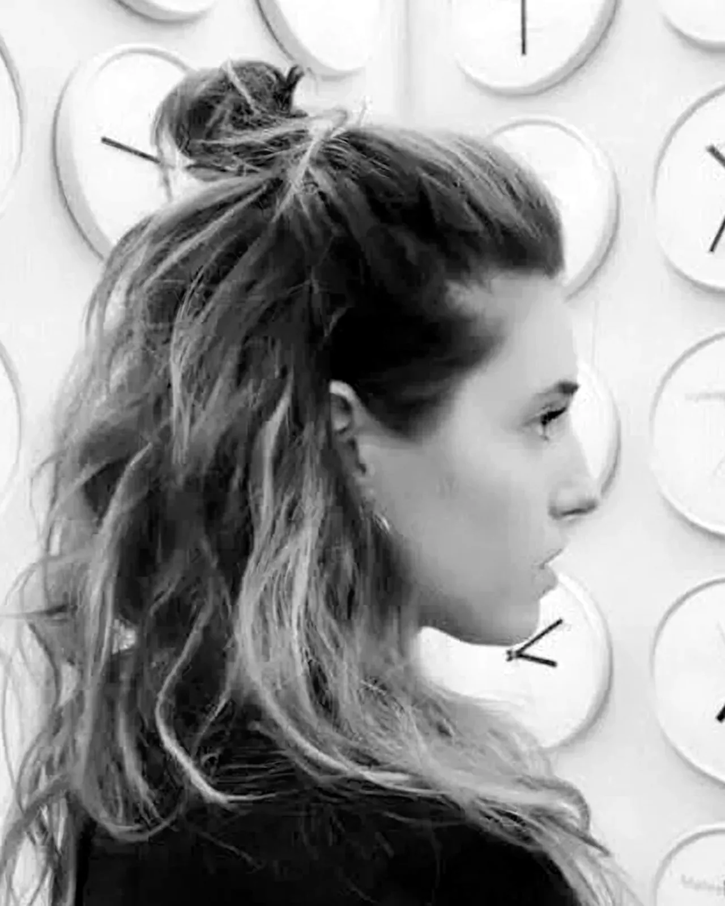

PRO-FILI Festival
The other artists

Anna Spazio Marangon
Visual arts · installation
Installations of threads and knots, between space and matter.

Anna Randolo
Illustration · Unnyverso
Giving colour and voice to stories, above all for children.

FILO
Songwriting
Singer-songwriter, author of the album «In cerca di un filo».

Massimo Marchioro
Painting
Searching the deepest rooms and the stairs that lead upwards.